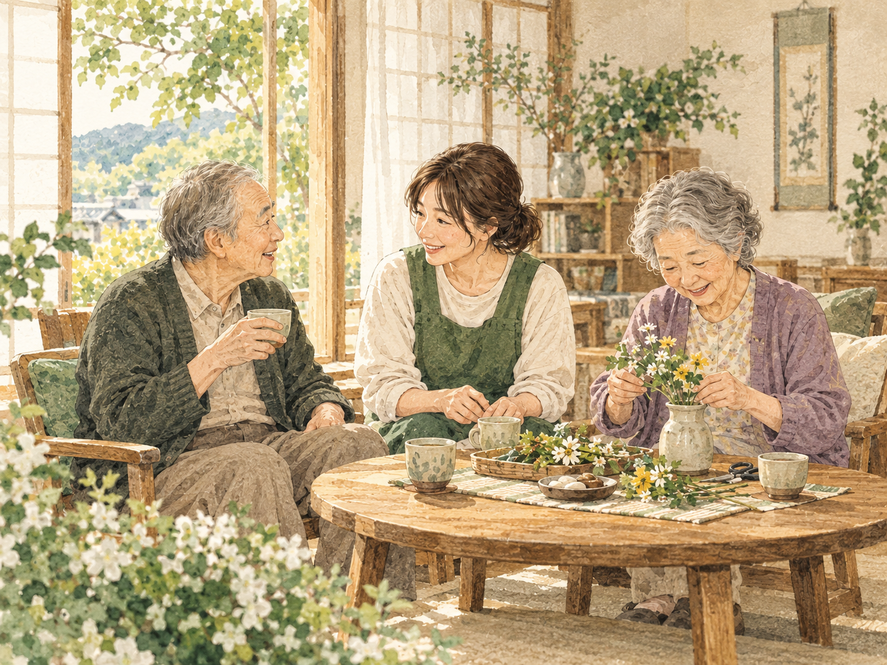

ご自宅へお迎え
ご自宅までお迎えに。あいさつを交わし、ゆっくり一日を始めます。
浜田市・認知症対応型通所介護
いつものように笑い、好きなことを楽しむ。
和乃家は、一人ひとりの歩幅に寄り添う、小さなデイサービスです。
電話受付の目安 月〜金 8:00〜17:00 ※プロトタイプ掲載情報
OUR PHILOSOPHY
介護する側の都合ではなく、いつでも中心にいるのはご本人です。
その日の気持ちに耳を澄ませ、ご本人の選択を大切にします。
暮らしも、好きなことも十人十色。一人ひとりに合う関わりを。
「できない」で終わらせず、できる方法を一緒に探し続けます。

ABOUT WANOIE
和乃家は、認知症のある方のための少人数制デイサービス。家庭に近い落ち着いた環境で、これまでの暮らしや習慣を大切にした時間をつくります。
A DAY AT WANOIE
決められた予定に合わせるのではなく、その日の体調や気持ちに合わせて。
日々の何気ない時間を大切にします。
※過ごし方は一例です。体調やご希望に応じて内容は異なります。
FOR YOUR FAMILY
まとまっていなくても大丈夫です。
今感じていることから、お聞かせください。
NEWS
RECRUIT
CONTACT US
介護についてのご相談・お問い合わせを承ります。
※メールアドレスはプロトタイプ用です。本番制作時に正式な窓口へ差し替えます。